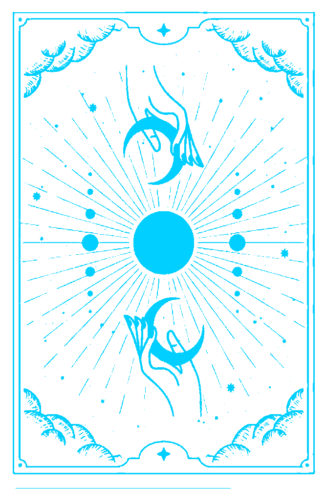

Ascendentes de Virgem
Horário de nascimento
Virgem
02:31 - 04:30
organizado, analítico, perfeccionista.
Libra
04:31 - 06:30
diplomático, equilibrado, harmônico.
Escorpião
08:31 - 10:30
intenso, misterioso, apaixonado.
Sagitario
10:31 - 12:30
aventureiro, otimista, filosófico.
Capricórnio
12:31 - 14:30
ambicioso, disciplinado, responsável.
Aquário
14:31 - 16:30
original, independente, humanitário.
Peixes
18:31 - 20:30
sensível, intuitivo, sonhador.
Áries
16:31 - 18:30
corajoso, impulsivo, líder natural.
Touro
18:31 - 20:30
paciente, determinado, favorece o prazer.
Gêmeos
20:31 - 22:30
comunicativo, curioso, versátil.
Câncer
22:31 - 00:30
sensível, protetor, ligado à família.
Leão
00:31 - 02:30
carismático, criativo, autoconfiante.
